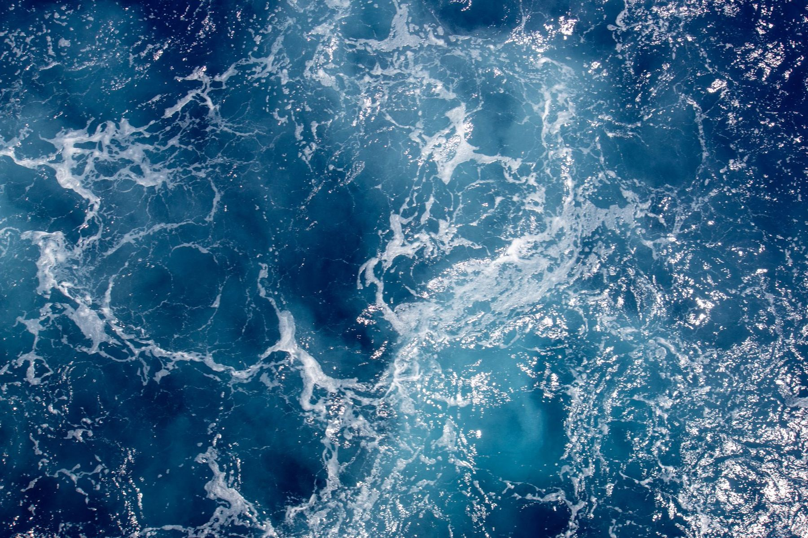

زيارة القاعدة
زيارات مرتبة إلى ورشة الاستزراع الدائري، للمزارع والباحثين والجهات التي تريد مشاهدة الممارسة في مكانها قبل الحديث عن الأجهزة أو الطرائق.
الرئيسية / الخدمات
الخدمات
الخطوة الأولى المفيدة هي مشاهدة ورشة نانشا. وما يلي هو نوع الحوار الخدمي الذي يمكن أن نخوضه بصدق — لا وعدًا بمهندس مناوب في كل موقع حول العالم.
زيارات مرتبة إلى ورشة الاستزراع الدائري، للمزارع والباحثين والجهات التي تريد مشاهدة الممارسة في مكانها قبل الحديث عن الأجهزة أو الطرائق.
مناقشة إدارة جودة المياه، وروتين الورشة، وممارسة التناوب مع الأحواض، وكيفية استخدام منصة الإدارة في الموقع.
يمكن مناقشة التدريب حول الورشة والمنصة وأجهزة تشيوهاو — في نانشا أولًا، وفي ترتيبات أخرى فقط حيث يمكن توفير طاقم وتخطيط.
بعد الزيارة
يعتمد الاستخدام الجاد للأجهزة ولورشة الاستزراع الدائري على قطع الغيار، والمساعدة في التشغيل، ووسيلة لطلب المشورة عندما يصبح النظام غير مستقر. ونحن مستعدون لمناقشة تلك الاحتياجات، ولبيان ما يمكن توفيره من نانشا بوضوح، وما لا يمكن وعده بعد عن بُعد.
لا ينشر هذا الموقع أزمنة مستوى الخدمة، ولا مكاتب إقليمية، ولا خريطة لفنيين في الخارج، لأنه لم يُوثَّق وجود شبكة كهذه في السجل العلني المستخدم هنا.

حيث قد ينمو الاهتمام
كثيرًا ما تُناقش طرائق الاستزراع الدائري حيث يندر الماء، أو حيث تُربى أصلًا أنواع دافئة الماء. ونحن مهتمون بحوارات جادة في تلك البيئات، بما في ذلك بلدان الخليج وأسواق جنوب شرق آسيا ذات الأنواع الدافئة الماء.
الاهتمام ليس مشروعًا مكتملًا. ولا تدّعي هذه الصفحة وجود عمل قائم في تلك المناطق.
